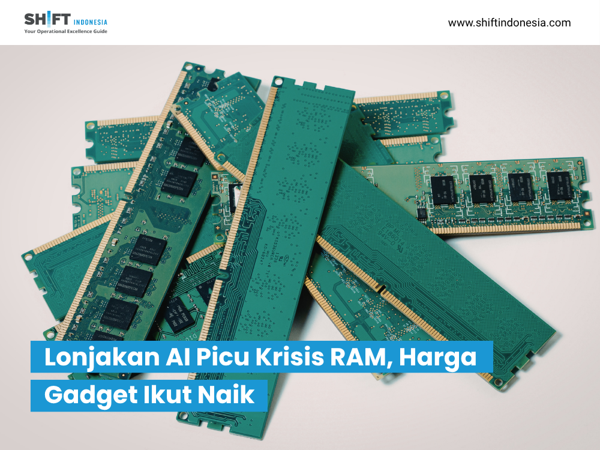
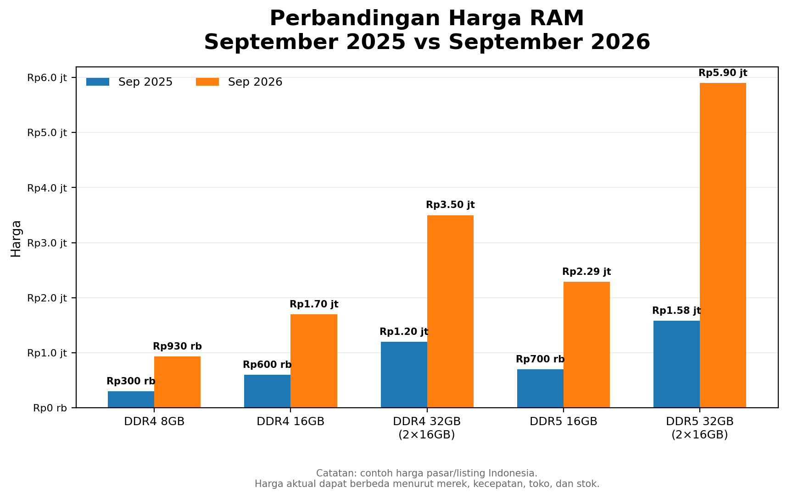

Kalau kamu berencana merakit PC, membeli laptop baru, atau mengganti smartphone (HP) ke seri terbaru belakangan ini, kamu mungkin menyadari satu hal yang bikin dompet menangis: harga komponen memori sedang naik gila-gilaan.
Dibandingkan awal tahun lalu, harga memori (RAM) dan penyimpanan (SSD/Internal Storage) melonjak sangat drastis. Fenomena ini tidak hanya menimpa komponen PC kelas atas, tapi juga merembet ke pasar kelas menengah hingga ke perangkat mobile yang kita genggam setiap hari.
Tapi, tahukah kamu kalau biang kerok utama dari kenaikan harga ini adalah ledakan tren Kecerdasan Buatan (AI)?
Lonjakan harga ini bukan terjadi karena kelangkaan bahan baku biasa, melainkan karena pergeseran besar-besaran di industri semikonduktor global. Berikut adalah alasan utamanya:
Perkembangan AI generatif membutuhkan daya komputasi dari ribuan GPU (kartu grafis) canggih di pusat data (data center). Server-server ini membutuhkan kapasitas memori yang berkali-kali lipat lebih besar dan lebih cepat dibandingkan server konvensional agar AI bisa "belajar" dan memproses miliaran data dalam hitungan detik
Untuk memenuhi kebutuhan server AI tersebut, produsen semikonduktor raksasa dunia seperti Samsung, SK Hynix, dan Micron saat ini mengalihkan sebagian besar jalur produksi pabrik mereka untuk memproduksi High Bandwidth Memory (HBM). HBM adalah memori khusus yang harganya sangat mahal dan margin keuntungannya sangat besar.
Karena fasilitas pabrik terbatas dan kini difokuskan untuk HBM demi server AI, produksi memori jenis DRAM (untuk RAM PC/Laptop) dan NAND Flash (untuk SSD dan memori HP) mau tidak mau harus dikurangi drastis. Hukum ekonomi dasar pun berlaku: ketika pasokan barang di pasar sedikit tetapi permintaan (dari pengguna PC dan HP) tetap ada, harga barang otomatis melambung tinggi.

Tren kelangkaan ini diprediksi tidak akan selesai dalam waktu singkat, karena membangun pabrik cip baru membutuhkan waktu bertahun-tahun dan investasi triliunan rupiah.
Tonton Video MEMAHAMI RAMMAGEDDON untuk melihat penjelasan lengkapnya.
LANJUT KE HALAMAN 2: DAMPAKNYA PADA PC & SMARTPHONE
.jpeg)